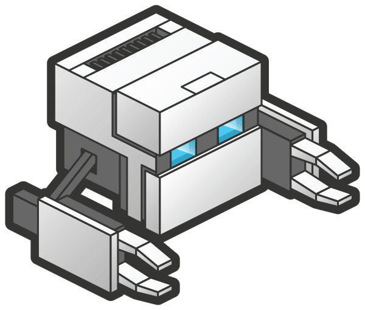

Tutoriel Android

1. Télécharger un JDK (java Developement Kit) nécessaire au fonctionnement d’Eclipse
Pour que l’exécutable (.exe) d’Eclipse puisse être lancé, j’ai dû installer un JDK. J’avais une erreur qui indiquait: A java Runtime Environment (JRE) or Java Development kit (JDK) must be available in order to run Eclipse.
Télécharger le JDK
2. Télécharger et installer la dernière version d'Eclipse Classic
Afin de lancer une simulation de notre application sur Android, nous allons utiliser Eclipse. Pour ma part j’ai utilisé la version 4.2.2 disponible gratuitement sur leur site web.
Télécharger Eclipse
3. Télécharger et installer le SDK (Software Developement Kit) d’Android
Une fois le SDK Manager ouvert, il faut installer une version d’un Android Software et l’Android SDK Platform-tools disponible sous le fichier Tools.
Télécharger le SDK d'Android
4. Télécharger et installer le plugin ADT (Android Development Tools)
- 4.1 Dans le menu d’Eclipse, allez dans Help
- 4.2 Install new software --> Add
- 4.3 Attribuer un nom et son lien d'emplacement (https://dl-ssl.google.com/android/eclipse/)
- 4.4 next --> Finish
5. Télécharger la dernière version de PhoneGap
Télécharger PhoneGap
6. Dans Eclipse, créer un nouveau Adroid Application Project
- 6.1 File
- 6.2 New
- 6.3 Android Application Project
Si l’option Android Application Project n’est pas disponible, aller dans l’onglet Window et cliquer sur Reset Perspective. Elle devrait maintenant être disponible.
7. Ajouter un émulateur sur Android
- 7.1 Window --> Android Virtual Device Manager
- 7.2 New
- 7.3 Choisir le modèle d’appareil émulé, ainsi que la version d’exploitation visée
8. Lancer l’application avec l’emulateur Android
Une fois le projet créé, que le projet est créé :
- 8.1 Clic droit sur le projet dans le Package Explorer
- 8.2 Run as Android Aplication
9. Enjoy !!!
 Tutoriel iOS
Tutoriel iOS Platformes
Platformes